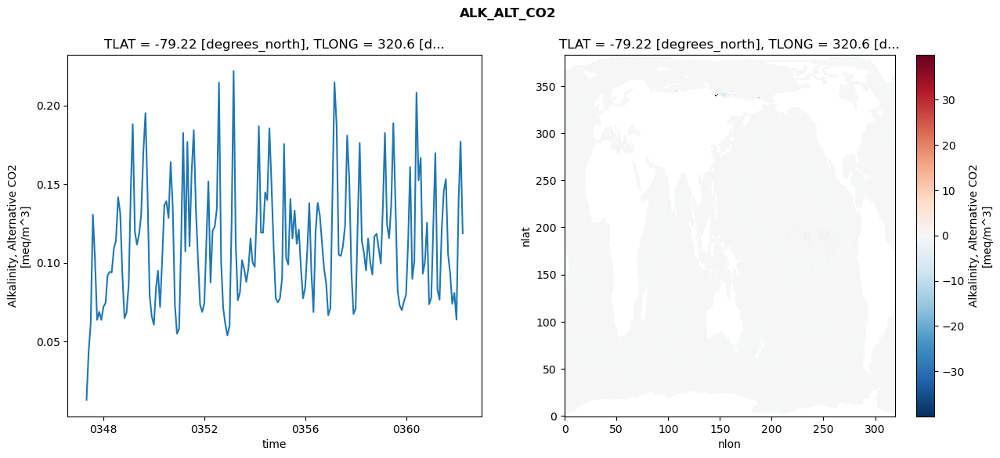
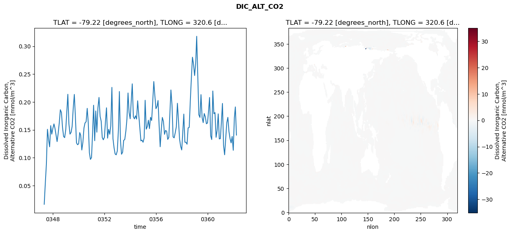
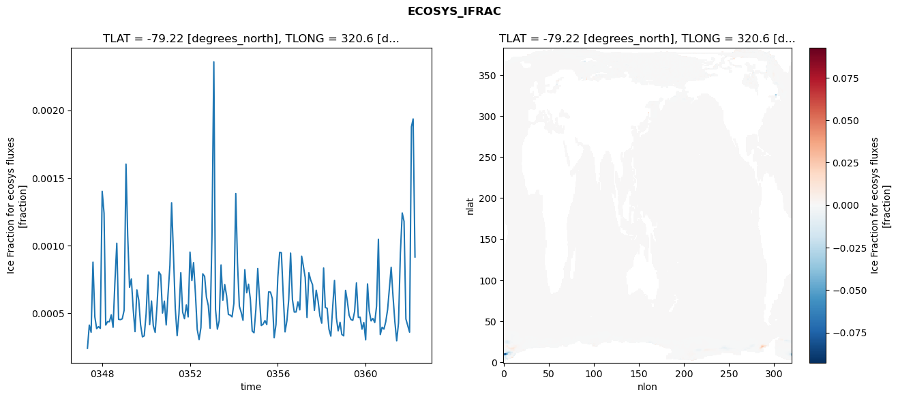
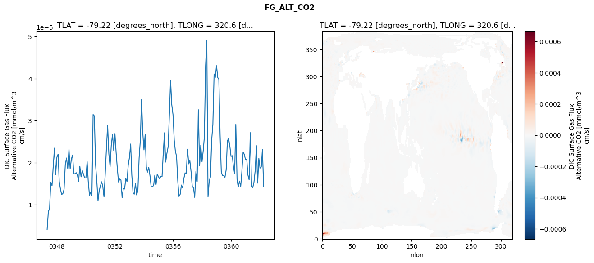

glb-dor_North_Atlantic_basin_034_1999-04-01_00137#
Simulation details#
Case: smyle.cdr-atlas-v0.glb-dor_North_Atlantic_basin_034_1999-04-01_00137.001
Basin: North_Atlantic_basin
Polygon: 34.0
Start date: 1999-04
Show code cell source Hide code cell source
import xarray as xr
import matplotlib.pyplot as plt
Show code cell source Hide code cell source
zarr_store = "/path/to/zarr/store"
# Parameters
zarr_store = "/global/cfs/projectdirs/m4746/Projects/Ocean-CDR-Atlas-v0/data/validation/smyle.cdr-atlas-v0.glb-dor_North_Atlantic_basin_034_1999-04-01_00137.001.validation.zarr"
Show code cell source Hide code cell source
%%time
ds_o = xr.open_zarr(zarr_store).compute()
ds_o
CPU times: user 636 ms, sys: 466 ms, total: 1.1 s
Wall time: 1.42 s
<xarray.Dataset> Size: 2MB
Dimensions: (nlat: 384, nlon: 320, time: 180)
Coordinates:
TLAT float64 8B -79.22
TLONG float64 8B 320.6
ULAT float64 8B -78.95
ULONG float64 8B 321.1
* time (time) object 1kB 0347-05-01 00:00:00 ... 0362-04-01 0...
z_t float32 4B 500.0
Dimensions without coordinates: nlat, nlon
Data variables:
ALK_ALT_CO2_diff (nlat, nlon) float32 492kB nan nan nan ... nan nan nan
ALK_ALT_CO2_rmse (time) float64 1kB 0.01303 0.04388 ... 0.177 0.1187
DIC_ALT_CO2_diff (nlat, nlon) float32 492kB nan nan nan ... nan nan nan
DIC_ALT_CO2_rmse (time) float64 1kB 0.01661 0.05443 ... 0.1912 0.1406
ECOSYS_IFRAC_diff (nlat, nlon) float32 492kB nan nan nan ... nan nan nan
ECOSYS_IFRAC_rmse (time) float64 1kB 0.0002411 0.0004128 ... 0.000916
FG_ALT_CO2_diff (nlat, nlon) float32 492kB nan nan nan ... nan nan nan
FG_ALT_CO2_rmse (time) float64 1kB 4.085e-06 8.465e-06 ... 1.44e-05xarray.Dataset
- nlat: 384
- nlon: 320
- time: 180
- TLAT()float64-79.22
- long_name :
- array of t-grid latitudes
- units :
- degrees_north
array(-79.22052261)
- TLONG()float64320.6
- long_name :
- array of t-grid longitudes
- units :
- degrees_east
array(320.56250892)
- ULAT()float64-78.95
- long_name :
- array of u-grid latitudes
- units :
- degrees_north
array(-78.95289509)
- ULONG()float64321.1
- long_name :
- array of u-grid longitudes
- units :
- degrees_east
array(321.12500894)
- time(time)object0347-05-01 00:00:00 ... 0362-04-...
- bounds :
- time_bound
- long_name :
- time
array([cftime.DatetimeNoLeap(347, 5, 1, 0, 0, 0, 0, has_year_zero=True), cftime.DatetimeNoLeap(347, 6, 1, 0, 0, 0, 0, has_year_zero=True), cftime.DatetimeNoLeap(347, 7, 1, 0, 0, 0, 0, has_year_zero=True), cftime.DatetimeNoLeap(347, 8, 1, 0, 0, 0, 0, has_year_zero=True), cftime.DatetimeNoLeap(347, 9, 1, 0, 0, 0, 0, has_year_zero=True), cftime.DatetimeNoLeap(347, 10, 1, 0, 0, 0, 0, has_year_zero=True), cftime.DatetimeNoLeap(347, 11, 1, 0, 0, 0, 0, has_year_zero=True), cftime.DatetimeNoLeap(347, 12, 1, 0, 0, 0, 0, has_year_zero=True), cftime.DatetimeNoLeap(348, 1, 1, 0, 0, 0, 0, has_year_zero=True), cftime.DatetimeNoLeap(348, 2, 1, 0, 0, 0, 0, has_year_zero=True), cftime.DatetimeNoLeap(348, 3, 1, 0, 0, 0, 0, has_year_zero=True), cftime.DatetimeNoLeap(348, 4, 1, 0, 0, 0, 0, has_year_zero=True), cftime.DatetimeNoLeap(348, 5, 1, 0, 0, 0, 0, has_year_zero=True), cftime.DatetimeNoLeap(348, 6, 1, 0, 0, 0, 0, has_year_zero=True), cftime.DatetimeNoLeap(348, 7, 1, 0, 0, 0, 0, has_year_zero=True), cftime.DatetimeNoLeap(348, 8, 1, 0, 0, 0, 0, has_year_zero=True), cftime.DatetimeNoLeap(348, 9, 1, 0, 0, 0, 0, has_year_zero=True), cftime.DatetimeNoLeap(348, 10, 1, 0, 0, 0, 0, has_year_zero=True), cftime.DatetimeNoLeap(348, 11, 1, 0, 0, 0, 0, has_year_zero=True), cftime.DatetimeNoLeap(348, 12, 1, 0, 0, 0, 0, has_year_zero=True), cftime.DatetimeNoLeap(349, 1, 1, 0, 0, 0, 0, has_year_zero=True), cftime.DatetimeNoLeap(349, 2, 1, 0, 0, 0, 0, has_year_zero=True), cftime.DatetimeNoLeap(349, 3, 1, 0, 0, 0, 0, has_year_zero=True), cftime.DatetimeNoLeap(349, 4, 1, 0, 0, 0, 0, has_year_zero=True), cftime.DatetimeNoLeap(349, 5, 1, 0, 0, 0, 0, has_year_zero=True), cftime.DatetimeNoLeap(349, 6, 1, 0, 0, 0, 0, has_year_zero=True), cftime.DatetimeNoLeap(349, 7, 1, 0, 0, 0, 0, has_year_zero=True), cftime.DatetimeNoLeap(349, 8, 1, 0, 0, 0, 0, has_year_zero=True), cftime.DatetimeNoLeap(349, 9, 1, 0, 0, 0, 0, has_year_zero=True), cftime.DatetimeNoLeap(349, 10, 1, 0, 0, 0, 0, has_year_zero=True), cftime.DatetimeNoLeap(349, 11, 1, 0, 0, 0, 0, has_year_zero=True), cftime.DatetimeNoLeap(349, 12, 1, 0, 0, 0, 0, has_year_zero=True), cftime.DatetimeNoLeap(350, 1, 1, 0, 0, 0, 0, has_year_zero=True), cftime.DatetimeNoLeap(350, 2, 1, 0, 0, 0, 0, has_year_zero=True), cftime.DatetimeNoLeap(350, 3, 1, 0, 0, 0, 0, has_year_zero=True), cftime.DatetimeNoLeap(350, 4, 1, 0, 0, 0, 0, has_year_zero=True), cftime.DatetimeNoLeap(350, 5, 1, 0, 0, 0, 0, has_year_zero=True), cftime.DatetimeNoLeap(350, 6, 1, 0, 0, 0, 0, has_year_zero=True), cftime.DatetimeNoLeap(350, 7, 1, 0, 0, 0, 0, has_year_zero=True), cftime.DatetimeNoLeap(350, 8, 1, 0, 0, 0, 0, has_year_zero=True), cftime.DatetimeNoLeap(350, 9, 1, 0, 0, 0, 0, has_year_zero=True), cftime.DatetimeNoLeap(350, 10, 1, 0, 0, 0, 0, has_year_zero=True), cftime.DatetimeNoLeap(350, 11, 1, 0, 0, 0, 0, has_year_zero=True), cftime.DatetimeNoLeap(350, 12, 1, 0, 0, 0, 0, has_year_zero=True), cftime.DatetimeNoLeap(351, 1, 1, 0, 0, 0, 0, has_year_zero=True), cftime.DatetimeNoLeap(351, 2, 1, 0, 0, 0, 0, has_year_zero=True), cftime.DatetimeNoLeap(351, 3, 1, 0, 0, 0, 0, has_year_zero=True), cftime.DatetimeNoLeap(351, 4, 1, 0, 0, 0, 0, has_year_zero=True), cftime.DatetimeNoLeap(351, 5, 1, 0, 0, 0, 0, has_year_zero=True), cftime.DatetimeNoLeap(351, 6, 1, 0, 0, 0, 0, has_year_zero=True), cftime.DatetimeNoLeap(351, 7, 1, 0, 0, 0, 0, has_year_zero=True), cftime.DatetimeNoLeap(351, 8, 1, 0, 0, 0, 0, has_year_zero=True), cftime.DatetimeNoLeap(351, 9, 1, 0, 0, 0, 0, has_year_zero=True), cftime.DatetimeNoLeap(351, 10, 1, 0, 0, 0, 0, has_year_zero=True), cftime.DatetimeNoLeap(351, 11, 1, 0, 0, 0, 0, has_year_zero=True), cftime.DatetimeNoLeap(351, 12, 1, 0, 0, 0, 0, has_year_zero=True), cftime.DatetimeNoLeap(352, 1, 1, 0, 0, 0, 0, has_year_zero=True), cftime.DatetimeNoLeap(352, 2, 1, 0, 0, 0, 0, has_year_zero=True), cftime.DatetimeNoLeap(352, 3, 1, 0, 0, 0, 0, has_year_zero=True), cftime.DatetimeNoLeap(352, 4, 1, 0, 0, 0, 0, has_year_zero=True), cftime.DatetimeNoLeap(352, 5, 1, 0, 0, 0, 0, has_year_zero=True), cftime.DatetimeNoLeap(352, 6, 1, 0, 0, 0, 0, has_year_zero=True), cftime.DatetimeNoLeap(352, 7, 1, 0, 0, 0, 0, has_year_zero=True), cftime.DatetimeNoLeap(352, 8, 1, 0, 0, 0, 0, has_year_zero=True), cftime.DatetimeNoLeap(352, 9, 1, 0, 0, 0, 0, has_year_zero=True), cftime.DatetimeNoLeap(352, 10, 1, 0, 0, 0, 0, has_year_zero=True), cftime.DatetimeNoLeap(352, 11, 1, 0, 0, 0, 0, has_year_zero=True), cftime.DatetimeNoLeap(352, 12, 1, 0, 0, 0, 0, has_year_zero=True), cftime.DatetimeNoLeap(353, 1, 1, 0, 0, 0, 0, has_year_zero=True), cftime.DatetimeNoLeap(353, 2, 1, 0, 0, 0, 0, has_year_zero=True), cftime.DatetimeNoLeap(353, 3, 1, 0, 0, 0, 0, has_year_zero=True), cftime.DatetimeNoLeap(353, 4, 1, 0, 0, 0, 0, has_year_zero=True), cftime.DatetimeNoLeap(353, 5, 1, 0, 0, 0, 0, has_year_zero=True), cftime.DatetimeNoLeap(353, 6, 1, 0, 0, 0, 0, has_year_zero=True), cftime.DatetimeNoLeap(353, 7, 1, 0, 0, 0, 0, has_year_zero=True), cftime.DatetimeNoLeap(353, 8, 1, 0, 0, 0, 0, has_year_zero=True), cftime.DatetimeNoLeap(353, 9, 1, 0, 0, 0, 0, has_year_zero=True), cftime.DatetimeNoLeap(353, 10, 1, 0, 0, 0, 0, has_year_zero=True), cftime.DatetimeNoLeap(353, 11, 1, 0, 0, 0, 0, has_year_zero=True), cftime.DatetimeNoLeap(353, 12, 1, 0, 0, 0, 0, has_year_zero=True), cftime.DatetimeNoLeap(354, 1, 1, 0, 0, 0, 0, has_year_zero=True), cftime.DatetimeNoLeap(354, 2, 1, 0, 0, 0, 0, has_year_zero=True), cftime.DatetimeNoLeap(354, 3, 1, 0, 0, 0, 0, has_year_zero=True), cftime.DatetimeNoLeap(354, 4, 1, 0, 0, 0, 0, has_year_zero=True), cftime.DatetimeNoLeap(354, 5, 1, 0, 0, 0, 0, has_year_zero=True), cftime.DatetimeNoLeap(354, 6, 1, 0, 0, 0, 0, has_year_zero=True), cftime.DatetimeNoLeap(354, 7, 1, 0, 0, 0, 0, has_year_zero=True), cftime.DatetimeNoLeap(354, 8, 1, 0, 0, 0, 0, has_year_zero=True), cftime.DatetimeNoLeap(354, 9, 1, 0, 0, 0, 0, has_year_zero=True), cftime.DatetimeNoLeap(354, 10, 1, 0, 0, 0, 0, has_year_zero=True), cftime.DatetimeNoLeap(354, 11, 1, 0, 0, 0, 0, has_year_zero=True), cftime.DatetimeNoLeap(354, 12, 1, 0, 0, 0, 0, has_year_zero=True), cftime.DatetimeNoLeap(355, 1, 1, 0, 0, 0, 0, has_year_zero=True), cftime.DatetimeNoLeap(355, 2, 1, 0, 0, 0, 0, has_year_zero=True), cftime.DatetimeNoLeap(355, 3, 1, 0, 0, 0, 0, has_year_zero=True), cftime.DatetimeNoLeap(355, 4, 1, 0, 0, 0, 0, has_year_zero=True), cftime.DatetimeNoLeap(355, 5, 1, 0, 0, 0, 0, has_year_zero=True), cftime.DatetimeNoLeap(355, 6, 1, 0, 0, 0, 0, has_year_zero=True), cftime.DatetimeNoLeap(355, 7, 1, 0, 0, 0, 0, has_year_zero=True), cftime.DatetimeNoLeap(355, 8, 1, 0, 0, 0, 0, has_year_zero=True), cftime.DatetimeNoLeap(355, 9, 1, 0, 0, 0, 0, has_year_zero=True), cftime.DatetimeNoLeap(355, 10, 1, 0, 0, 0, 0, has_year_zero=True), cftime.DatetimeNoLeap(355, 11, 1, 0, 0, 0, 0, has_year_zero=True), cftime.DatetimeNoLeap(355, 12, 1, 0, 0, 0, 0, has_year_zero=True), cftime.DatetimeNoLeap(356, 1, 1, 0, 0, 0, 0, has_year_zero=True), cftime.DatetimeNoLeap(356, 2, 1, 0, 0, 0, 0, has_year_zero=True), cftime.DatetimeNoLeap(356, 3, 1, 0, 0, 0, 0, has_year_zero=True), cftime.DatetimeNoLeap(356, 4, 1, 0, 0, 0, 0, has_year_zero=True), cftime.DatetimeNoLeap(356, 5, 1, 0, 0, 0, 0, has_year_zero=True), cftime.DatetimeNoLeap(356, 6, 1, 0, 0, 0, 0, has_year_zero=True), cftime.DatetimeNoLeap(356, 7, 1, 0, 0, 0, 0, has_year_zero=True), cftime.DatetimeNoLeap(356, 8, 1, 0, 0, 0, 0, has_year_zero=True), cftime.DatetimeNoLeap(356, 9, 1, 0, 0, 0, 0, has_year_zero=True), cftime.DatetimeNoLeap(356, 10, 1, 0, 0, 0, 0, has_year_zero=True), cftime.DatetimeNoLeap(356, 11, 1, 0, 0, 0, 0, has_year_zero=True), cftime.DatetimeNoLeap(356, 12, 1, 0, 0, 0, 0, has_year_zero=True), cftime.DatetimeNoLeap(357, 1, 1, 0, 0, 0, 0, has_year_zero=True), cftime.DatetimeNoLeap(357, 2, 1, 0, 0, 0, 0, has_year_zero=True), cftime.DatetimeNoLeap(357, 3, 1, 0, 0, 0, 0, has_year_zero=True), cftime.DatetimeNoLeap(357, 4, 1, 0, 0, 0, 0, has_year_zero=True), cftime.DatetimeNoLeap(357, 5, 1, 0, 0, 0, 0, has_year_zero=True), cftime.DatetimeNoLeap(357, 6, 1, 0, 0, 0, 0, has_year_zero=True), cftime.DatetimeNoLeap(357, 7, 1, 0, 0, 0, 0, has_year_zero=True), cftime.DatetimeNoLeap(357, 8, 1, 0, 0, 0, 0, has_year_zero=True), cftime.DatetimeNoLeap(357, 9, 1, 0, 0, 0, 0, has_year_zero=True), cftime.DatetimeNoLeap(357, 10, 1, 0, 0, 0, 0, has_year_zero=True), cftime.DatetimeNoLeap(357, 11, 1, 0, 0, 0, 0, has_year_zero=True), cftime.DatetimeNoLeap(357, 12, 1, 0, 0, 0, 0, has_year_zero=True), cftime.DatetimeNoLeap(358, 1, 1, 0, 0, 0, 0, has_year_zero=True), cftime.DatetimeNoLeap(358, 2, 1, 0, 0, 0, 0, has_year_zero=True), cftime.DatetimeNoLeap(358, 3, 1, 0, 0, 0, 0, has_year_zero=True), cftime.DatetimeNoLeap(358, 4, 1, 0, 0, 0, 0, has_year_zero=True), cftime.DatetimeNoLeap(358, 5, 1, 0, 0, 0, 0, has_year_zero=True), cftime.DatetimeNoLeap(358, 6, 1, 0, 0, 0, 0, has_year_zero=True), cftime.DatetimeNoLeap(358, 7, 1, 0, 0, 0, 0, has_year_zero=True), cftime.DatetimeNoLeap(358, 8, 1, 0, 0, 0, 0, has_year_zero=True), cftime.DatetimeNoLeap(358, 9, 1, 0, 0, 0, 0, has_year_zero=True), cftime.DatetimeNoLeap(358, 10, 1, 0, 0, 0, 0, has_year_zero=True), cftime.DatetimeNoLeap(358, 11, 1, 0, 0, 0, 0, has_year_zero=True), cftime.DatetimeNoLeap(358, 12, 1, 0, 0, 0, 0, has_year_zero=True), cftime.DatetimeNoLeap(359, 1, 1, 0, 0, 0, 0, has_year_zero=True), cftime.DatetimeNoLeap(359, 2, 1, 0, 0, 0, 0, has_year_zero=True), cftime.DatetimeNoLeap(359, 3, 1, 0, 0, 0, 0, has_year_zero=True), cftime.DatetimeNoLeap(359, 4, 1, 0, 0, 0, 0, has_year_zero=True), cftime.DatetimeNoLeap(359, 5, 1, 0, 0, 0, 0, has_year_zero=True), cftime.DatetimeNoLeap(359, 6, 1, 0, 0, 0, 0, has_year_zero=True), cftime.DatetimeNoLeap(359, 7, 1, 0, 0, 0, 0, has_year_zero=True), cftime.DatetimeNoLeap(359, 8, 1, 0, 0, 0, 0, has_year_zero=True), cftime.DatetimeNoLeap(359, 9, 1, 0, 0, 0, 0, has_year_zero=True), cftime.DatetimeNoLeap(359, 10, 1, 0, 0, 0, 0, has_year_zero=True), cftime.DatetimeNoLeap(359, 11, 1, 0, 0, 0, 0, has_year_zero=True), cftime.DatetimeNoLeap(359, 12, 1, 0, 0, 0, 0, has_year_zero=True), cftime.DatetimeNoLeap(360, 1, 1, 0, 0, 0, 0, has_year_zero=True), cftime.DatetimeNoLeap(360, 2, 1, 0, 0, 0, 0, has_year_zero=True), cftime.DatetimeNoLeap(360, 3, 1, 0, 0, 0, 0, has_year_zero=True), cftime.DatetimeNoLeap(360, 4, 1, 0, 0, 0, 0, has_year_zero=True), cftime.DatetimeNoLeap(360, 5, 1, 0, 0, 0, 0, has_year_zero=True), cftime.DatetimeNoLeap(360, 6, 1, 0, 0, 0, 0, has_year_zero=True), cftime.DatetimeNoLeap(360, 7, 1, 0, 0, 0, 0, has_year_zero=True), cftime.DatetimeNoLeap(360, 8, 1, 0, 0, 0, 0, has_year_zero=True), cftime.DatetimeNoLeap(360, 9, 1, 0, 0, 0, 0, has_year_zero=True), cftime.DatetimeNoLeap(360, 10, 1, 0, 0, 0, 0, has_year_zero=True), cftime.DatetimeNoLeap(360, 11, 1, 0, 0, 0, 0, has_year_zero=True), cftime.DatetimeNoLeap(360, 12, 1, 0, 0, 0, 0, has_year_zero=True), cftime.DatetimeNoLeap(361, 1, 1, 0, 0, 0, 0, has_year_zero=True), cftime.DatetimeNoLeap(361, 2, 1, 0, 0, 0, 0, has_year_zero=True), cftime.DatetimeNoLeap(361, 3, 1, 0, 0, 0, 0, has_year_zero=True), cftime.DatetimeNoLeap(361, 4, 1, 0, 0, 0, 0, has_year_zero=True), cftime.DatetimeNoLeap(361, 5, 1, 0, 0, 0, 0, has_year_zero=True), cftime.DatetimeNoLeap(361, 6, 1, 0, 0, 0, 0, has_year_zero=True), cftime.DatetimeNoLeap(361, 7, 1, 0, 0, 0, 0, has_year_zero=True), cftime.DatetimeNoLeap(361, 8, 1, 0, 0, 0, 0, has_year_zero=True), cftime.DatetimeNoLeap(361, 9, 1, 0, 0, 0, 0, has_year_zero=True), cftime.DatetimeNoLeap(361, 10, 1, 0, 0, 0, 0, has_year_zero=True), cftime.DatetimeNoLeap(361, 11, 1, 0, 0, 0, 0, has_year_zero=True), cftime.DatetimeNoLeap(361, 12, 1, 0, 0, 0, 0, has_year_zero=True), cftime.DatetimeNoLeap(362, 1, 1, 0, 0, 0, 0, has_year_zero=True), cftime.DatetimeNoLeap(362, 2, 1, 0, 0, 0, 0, has_year_zero=True), cftime.DatetimeNoLeap(362, 3, 1, 0, 0, 0, 0, has_year_zero=True), cftime.DatetimeNoLeap(362, 4, 1, 0, 0, 0, 0, has_year_zero=True)], dtype=object) - z_t()float32500.0
- long_name :
- depth from surface to midpoint of layer
- positive :
- down
- units :
- centimeters
- valid_max :
- 537500.0
- valid_min :
- 500.0
array(500., dtype=float32)
- ALK_ALT_CO2_diff(nlat, nlon)float32nan nan nan nan ... nan nan nan nan
- cell_methods :
- time: mean
- grid_loc :
- 3111
- long_name :
- Alkalinity, Alternative CO2
- units :
- meq/m^3
array([[ nan, nan, nan, ..., nan, nan, nan], [ nan, nan, nan, ..., nan, nan, nan], [-0.03198242, -0.03881836, -0.03198242, ..., nan, nan, nan], ..., [ nan, nan, nan, ..., nan, nan, nan], [ nan, nan, nan, ..., nan, nan, nan], [ nan, nan, nan, ..., nan, nan, nan]], dtype=float32) - ALK_ALT_CO2_rmse(time)float640.01303 0.04388 ... 0.177 0.1187
- cell_methods :
- time: mean
- grid_loc :
- 3111
- long_name :
- Alkalinity, Alternative CO2
- units :
- meq/m^3
array([0.01302588, 0.04388452, 0.06185139, 0.13058466, 0.10169189, 0.06377331, 0.0689371 , 0.06376331, 0.07203504, 0.07461061, 0.09185561, 0.09428349, 0.09390194, 0.10928276, 0.11411187, 0.14166359, 0.13147632, 0.09353702, 0.06483597, 0.06847617, 0.08573102, 0.14662329, 0.18804366, 0.11966578, 0.11161233, 0.11819756, 0.13037317, 0.16966736, 0.19510597, 0.14492117, 0.07887056, 0.06600814, 0.06072157, 0.08405327, 0.0949659 , 0.0719833 , 0.10182576, 0.13648238, 0.13917782, 0.12848875, 0.16393859, 0.13540923, 0.07341621, 0.0549942 , 0.0582447 , 0.11545135, 0.18243287, 0.10729154, 0.1767687 , 0.11048533, 0.1569307 , 0.18418137, 0.13453295, 0.1027158 , 0.07345863, 0.06879555, 0.07420401, 0.11431107, 0.15169534, 0.08752247, 0.12040624, 0.12294024, 0.13438401, 0.21438757, 0.10095643, 0.07141562, 0.06119769, 0.05394889, 0.05996332, 0.12736319, 0.22176237, 0.11217535, 0.07622824, 0.08125952, 0.1016612 , 0.09597104, 0.08792115, 0.0966229 , 0.11539194, 0.10005034, 0.09754012, 0.13431951, 0.18679038, 0.1192286 , 0.11911328, 0.14476284, 0.1398669 , 0.18542201, 0.14945994, 0.11046224, 0.07759481, 0.0749074 , 0.07754979, 0.09030574, 0.17540508, 0.10280038, 0.09888609, 0.14053493, 0.11554371, 0.13317982, 0.11206067, 0.12106062, 0.09608399, 0.07750882, 0.08429024, 0.10809325, 0.13791807, 0.09409181, 0.06872451, 0.12003458, 0.13800996, 0.13017103, 0.11279362, 0.09645243, 0.08689883, 0.06668723, 0.07134078, 0.14579465, 0.21452389, 0.18726283, 0.1050948 , 0.1044058 , 0.1105508 , 0.12328551, 0.18076913, 0.15290454, 0.09440215, 0.06755519, 0.07095782, 0.12676515, 0.17610081, 0.11395862, 0.1066054 , 0.09512726, 0.11545528, 0.10005357, 0.09261696, 0.11689266, 0.11839987, 0.10909856, 0.09956065, 0.13734112, 0.1823637 , 0.12415525, 0.11569054, 0.13700203, 0.18863824, 0.13732926, 0.08222407, 0.07288253, 0.06993149, 0.07550277, 0.07978776, 0.11453565, 0.16074778, 0.08977309, 0.1010509 , 0.20799573, 0.15243835, 0.16654713, 0.09314662, 0.10033694, 0.12549243, 0.07371191, 0.07771515, 0.12630828, 0.16958255, 0.08318781, 0.07660661, 0.12065315, 0.14529228, 0.15304623, 0.10570586, 0.09354534, 0.07393708, 0.08093493, 0.06391092, 0.1396125 , 0.17701451, 0.11870163]) - DIC_ALT_CO2_diff(nlat, nlon)float32nan nan nan nan ... nan nan nan nan
- cell_methods :
- time: mean
- grid_loc :
- 3111
- long_name :
- Dissolved Inorganic Carbon, Alternative CO2
- units :
- mmol/m^3
array([[ nan, nan, nan, ..., nan, nan, nan], [ nan, nan, nan, ..., nan, nan, nan], [-0.11914062, -0.11767578, -0.10498047, ..., nan, nan, nan], ..., [ nan, nan, nan, ..., nan, nan, nan], [ nan, nan, nan, ..., nan, nan, nan], [ nan, nan, nan, ..., nan, nan, nan]], dtype=float32) - DIC_ALT_CO2_rmse(time)float640.01661 0.05443 ... 0.1912 0.1406
- cell_methods :
- time: mean
- grid_loc :
- 3111
- long_name :
- Dissolved Inorganic Carbon, Alternative CO2
- units :
- mmol/m^3
array([0.01660632, 0.0544342 , 0.0880168 , 0.15105921, 0.13277902, 0.11967928, 0.15760487, 0.1423562 , 0.15275391, 0.16073218, 0.1530828 , 0.14109889, 0.12902465, 0.14401783, 0.16242048, 0.18615079, 0.18102555, 0.15469989, 0.13820868, 0.13611526, 0.15039116, 0.18392025, 0.21381047, 0.16037891, 0.14240089, 0.14543375, 0.15637622, 0.18901698, 0.21359109, 0.17339174, 0.12686536, 0.12340403, 0.12494192, 0.14520304, 0.14024164, 0.11393168, 0.12752314, 0.15340549, 0.16246695, 0.16457987, 0.1885894 , 0.16242697, 0.10931321, 0.09708138, 0.10043731, 0.14593394, 0.19421155, 0.13059096, 0.18392979, 0.14587569, 0.18931641, 0.20820837, 0.17427999, 0.16581517, 0.13625432, 0.13227594, 0.13670705, 0.1661457 , 0.18959718, 0.13515523, 0.15104882, 0.14217201, 0.15805223, 0.22622131, 0.13410397, 0.11814208, 0.1067604 , 0.10528522, 0.11220648, 0.14938407, 0.21877679, 0.13054101, 0.10633614, 0.10997442, 0.13118962, 0.13278334, 0.14803019, 0.16916001, 0.21614679, 0.18098677, 0.16992719, 0.20289723, 0.23256381, 0.17362237, 0.16980204, 0.17534547, 0.16939348, 0.20215659, 0.17670756, 0.15369507, 0.13028586, 0.13165731, 0.12783199, 0.13547704, 0.20310261, 0.15132053, 0.15593286, 0.1673 , 0.15227575, 0.17258155, 0.16682016, 0.19973583, 0.23667382, 0.211408 , 0.18799553, 0.19231752, 0.20269714, 0.15788111, 0.11975759, 0.1501501 , 0.17234777, 0.16508843, 0.14202334, 0.14909795, 0.14741926, 0.13294405, 0.13644837, 0.18025453, 0.2215676 , 0.19427376, 0.13740715, 0.13572401, 0.14482636, 0.15552734, 0.19770898, 0.16698608, 0.13347456, 0.12060892, 0.11403789, 0.14681821, 0.17833749, 0.12788023, 0.12773344, 0.12431135, 0.15351325, 0.15438398, 0.20161055, 0.24255075, 0.28027251, 0.26782946, 0.24742886, 0.26938043, 0.31779568, 0.24691212, 0.17715699, 0.17231318, 0.21323026, 0.17239413, 0.16302372, 0.1793629 , 0.17324306, 0.16096813, 0.16238046, 0.18445898, 0.20811012, 0.13953329, 0.13271787, 0.21973971, 0.1789543 , 0.18106665, 0.13667877, 0.14897338, 0.17875116, 0.13383367, 0.13434983, 0.16641289, 0.19744183, 0.12223464, 0.10537135, 0.13410721, 0.16261054, 0.17243328, 0.14720318, 0.13463149, 0.1266231 , 0.13830834, 0.1134186 , 0.17197305, 0.19116335, 0.14064975]) - ECOSYS_IFRAC_diff(nlat, nlon)float32nan nan nan nan ... nan nan nan nan
- cell_methods :
- time: mean
- grid_loc :
- 2110
- long_name :
- Ice Fraction for ecosys fluxes
- units :
- fraction
array([[ nan, nan, nan, ..., nan, nan, nan], [ nan, nan, nan, ..., nan, nan, nan], [-0.00020736, -0.00235671, -0.00182819, ..., nan, nan, nan], ..., [ nan, nan, nan, ..., nan, nan, nan], [ nan, nan, nan, ..., nan, nan, nan], [ nan, nan, nan, ..., nan, nan, nan]], dtype=float32) - ECOSYS_IFRAC_rmse(time)float640.0002411 0.0004128 ... 0.000916
- cell_methods :
- time: mean
- grid_loc :
- 2110
- long_name :
- Ice Fraction for ecosys fluxes
- units :
- fraction
array([0.00024107, 0.00041277, 0.00036004, 0.00087792, 0.00047342, 0.0003867 , 0.0004012 , 0.00038844, 0.00140104, 0.00123984, 0.00041309, 0.00043835, 0.00043787, 0.0004886 , 0.00039658, 0.00073393, 0.00101769, 0.00045524, 0.00045328, 0.00045937, 0.00052345, 0.00160224, 0.00107564, 0.00069194, 0.00075316, 0.00052937, 0.00036449, 0.00067252, 0.00059728, 0.00041596, 0.00032599, 0.00033324, 0.00049391, 0.00078225, 0.00041653, 0.00059056, 0.00040743, 0.00035893, 0.00055093, 0.00080588, 0.00078393, 0.0005019 , 0.00058979, 0.00041379, 0.00064371, 0.00085384, 0.00131662, 0.00093514, 0.00053754, 0.00033443, 0.00049449, 0.0007998 , 0.00050853, 0.00045997, 0.00056152, 0.00047324, 0.00095212, 0.00074189, 0.00087435, 0.00064613, 0.00038113, 0.00030574, 0.00039376, 0.00079155, 0.00077241, 0.00061982, 0.00055709, 0.000389 , 0.00106819, 0.00235742, 0.00052969, 0.00038282, 0.00044476, 0.00085715, 0.00059678, 0.00071256, 0.00063024, 0.00049126, 0.00048662, 0.00047344, 0.00057459, 0.00138458, 0.00087689, 0.00055297, 0.0005078 , 0.00044821, 0.00082204, 0.00065174, 0.00071487, 0.00060418, 0.00036873, 0.0003563 , 0.00052892, 0.00083073, 0.00061806, 0.00040934, 0.0004194 , 0.00044596, 0.00041674, 0.00065808, 0.0006565 , 0.00060876, 0.00031919, 0.00041684, 0.00076841, 0.00095099, 0.00094738, 0.00063169, 0.00036284, 0.00044524, 0.00060059, 0.00094467, 0.00060036, 0.00050905, 0.00050969, 0.00058448, 0.00052529, 0.00092191, 0.00084977, 0.00076368, 0.00046923, 0.0007993 , 0.00074626, 0.00071072, 0.00052133, 0.00067013, 0.00059115, 0.00048084, 0.00042705, 0.0008344 , 0.00054267, 0.00053692, 0.00038236, 0.00033144, 0.00053939, 0.00074265, 0.00046628, 0.00037021, 0.0004334 , 0.00034341, 0.00033316, 0.00066924, 0.00059457, 0.00048579, 0.00045424, 0.00044761, 0.00051209, 0.00072476, 0.00046975, 0.00047081, 0.00038283, 0.00043188, 0.00030366, 0.00071706, 0.00051891, 0.00044371, 0.00046199, 0.00043178, 0.00055249, 0.00104728, 0.00034293, 0.00039682, 0.00038334, 0.0004377 , 0.00052827, 0.00069033, 0.00084021, 0.0006241 , 0.00044015, 0.00029696, 0.00042854, 0.00094244, 0.00124101, 0.00117885, 0.00045768, 0.00040995, 0.00036061, 0.00187839, 0.00193578, 0.00091599]) - FG_ALT_CO2_diff(nlat, nlon)float32nan nan nan nan ... nan nan nan nan
- cell_methods :
- time: mean
- grid_loc :
- 2110
- long_name :
- DIC Surface Gas Flux, Alternative CO2
- units :
- mmol/m^3 cm/s
array([[ nan, nan, nan, ..., nan, nan, nan], [ nan, nan, nan, ..., nan, nan, nan], [3.1792588e-06, 1.1598575e-05, 8.8495726e-06, ..., nan, nan, nan], ..., [ nan, nan, nan, ..., nan, nan, nan], [ nan, nan, nan, ..., nan, nan, nan], [ nan, nan, nan, ..., nan, nan, nan]], dtype=float32) - FG_ALT_CO2_rmse(time)float644.085e-06 8.465e-06 ... 1.44e-05
- cell_methods :
- time: mean
- grid_loc :
- 2110
- long_name :
- DIC Surface Gas Flux, Alternative CO2
- units :
- mmol/m^3 cm/s
array([4.08543680e-06, 8.46483606e-06, 8.93877915e-06, 1.53853299e-05, 1.45187480e-05, 1.90743123e-05, 2.34551280e-05, 1.71740509e-05, 2.12764747e-05, 2.20192870e-05, 1.55495138e-05, 1.37173943e-05, 1.24294379e-05, 1.26615091e-05, 1.36968345e-05, 1.95591463e-05, 2.10997892e-05, 1.86256269e-05, 2.31657544e-05, 1.85210816e-05, 2.09053278e-05, 2.18180775e-05, 1.74158724e-05, 1.73322512e-05, 1.76196393e-05, 1.70681516e-05, 1.55730940e-05, 1.91469049e-05, 1.66323582e-05, 1.81456011e-05, 1.72547607e-05, 1.63739152e-05, 1.63697139e-05, 2.02425602e-05, 1.55525442e-05, 1.22460909e-05, 1.30186319e-05, 1.21576933e-05, 3.14472293e-05, 3.11248010e-05, 1.94921742e-05, 1.57981408e-05, 1.09308627e-05, 1.33266913e-05, 1.44788363e-05, 1.54529265e-05, 1.44010189e-05, 1.18423816e-05, 1.71842736e-05, 2.33435516e-05, 2.88619432e-05, 2.21040686e-05, 1.90801468e-05, 2.40887270e-05, 2.67192206e-05, 2.29276040e-05, 2.69022899e-05, 2.22645550e-05, 1.87878077e-05, 1.54025858e-05, 1.61217586e-05, 1.59044060e-05, 1.16884191e-05, 1.38789943e-05, 1.37464439e-05, 1.62343543e-05, 1.55015643e-05, 1.93690437e-05, 2.12317996e-05, 2.44405854e-05, 1.70568377e-05, 1.28895209e-05, 1.25118996e-05, 1.51606940e-05, 1.23282154e-05, 1.33685231e-05, 2.10820255e-05, 2.52207471e-05, 3.49941304e-05, 2.72864115e-05, ... 2.37762773e-05, 3.10118142e-05, 3.95696007e-05, 3.37899691e-05, 3.14323477e-05, 2.54520237e-05, 2.28152688e-05, 2.14718913e-05, 1.57471269e-05, 1.19601498e-05, 1.24988878e-05, 1.46782415e-05, 1.39886783e-05, 1.62089453e-05, 1.75890518e-05, 1.73888894e-05, 2.32050406e-05, 1.97191600e-05, 2.04749344e-05, 1.78163386e-05, 1.43530485e-05, 1.40062600e-05, 1.17545389e-05, 1.78969418e-05, 1.55432804e-05, 3.25873846e-05, 1.92288574e-05, 2.41425174e-05, 2.02441201e-05, 2.29202213e-05, 2.61201853e-05, 4.30211958e-05, 4.89838772e-05, 1.18698716e-05, 1.56123071e-05, 1.65922065e-05, 2.53852757e-05, 2.90768188e-05, 4.10800713e-05, 4.02714681e-05, 4.30574069e-05, 4.02189733e-05, 3.98248668e-05, 2.65669282e-05, 1.77887748e-05, 1.68946392e-05, 1.69834490e-05, 1.65155961e-05, 1.83453314e-05, 2.52246961e-05, 2.57202677e-05, 2.40046839e-05, 2.14887819e-05, 2.16547704e-05, 1.91263527e-05, 1.74253704e-05, 2.90974285e-05, 1.60154283e-05, 1.41924977e-05, 1.56190623e-05, 1.43428178e-05, 1.78726829e-05, 2.25197253e-05, 2.19648242e-05, 2.06391369e-05, 2.07969442e-05, 1.71003282e-05, 1.59206047e-05, 2.71315325e-05, 1.44744202e-05, 1.40692357e-05, 1.53838864e-05, 1.82023826e-05, 2.40461394e-05, 1.51472480e-05, 2.10208224e-05, 1.85911018e-05, 1.90033691e-05, 2.30998134e-05, 1.43957121e-05])
- timePandasIndex
PandasIndex(CFTimeIndex([0347-05-01 00:00:00, 0347-06-01 00:00:00, 0347-07-01 00:00:00, 0347-08-01 00:00:00, 0347-09-01 00:00:00, 0347-10-01 00:00:00, 0347-11-01 00:00:00, 0347-12-01 00:00:00, 0348-01-01 00:00:00, 0348-02-01 00:00:00, ... 0361-07-01 00:00:00, 0361-08-01 00:00:00, 0361-09-01 00:00:00, 0361-10-01 00:00:00, 0361-11-01 00:00:00, 0361-12-01 00:00:00, 0362-01-01 00:00:00, 0362-02-01 00:00:00, 0362-03-01 00:00:00, 0362-04-01 00:00:00], dtype='object', length=180, calendar='noleap', freq='MS'))
Show code cell source Hide code cell source
variables = [v[:-5] for v in ds_o.variables if "_rmse" in v]
Show code cell source Hide code cell source
plt.rcParams.update({'figure.max_open_warning': 0})
for v in variables:
fig, axs = plt.subplots(1, 2, figsize=(15, 6))
ds_o[f"{v}_rmse"].plot(ax=axs[0])
ds_o[f"{v}_diff"].plot(ax=axs[1])
plt.suptitle(v, fontweight="bold")



